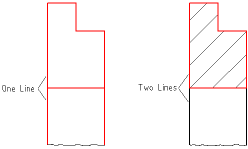
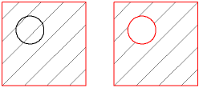

|
||
 |
||


Hatches and Solid Fills
CAD Toolbar:
Menu:
Draw - Hatch
Command:
?
Description:
Fills an area surrounded by existing entities with a hatch pattern or a solid color.
Procedure:
- Prepare the entities that surround the hatching area so they form a closed contour. The contour must be closed in a way that one entity is connected to the next one as shown in the right sketch of Figure 47.

Figure 47: Preparation for the boundary entities.
- Launch the hatching action.
- Select the contour(s) you want to fill. Note that islands inside contours will get hatched if they are not selected (Figure 48)

Figure 48: Islands which are selected won't get hatched through (right).
- Click the right arrow button in the CAD toolbar to continue.
- A dialog for the hatch options is displayed (Figure 49). Choose a hatch pattern, scale factor and a rotation angle of the pattern. If you want to fill the object with a solid color instead of a pattern, tick the checkbox "Solid Fill".
- Click 'OK' to proceed with the hatching. Depending on the complexity of the contour and the scale factor of the chosen pattern, it might take a while to create the pattern.
{kind=link}
Figure 49: Hatch pattern selection.
|